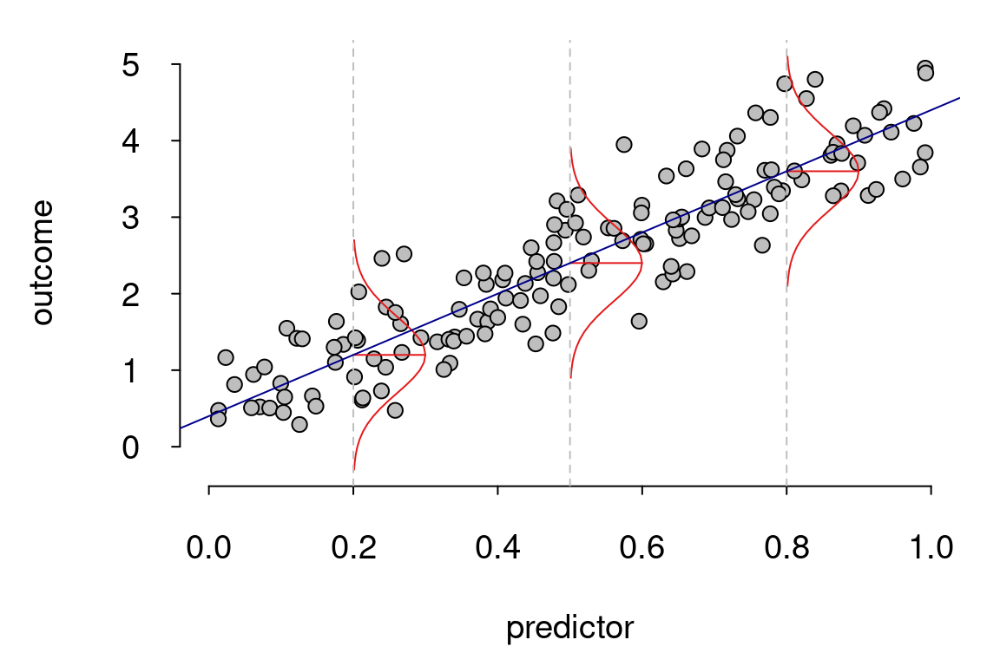
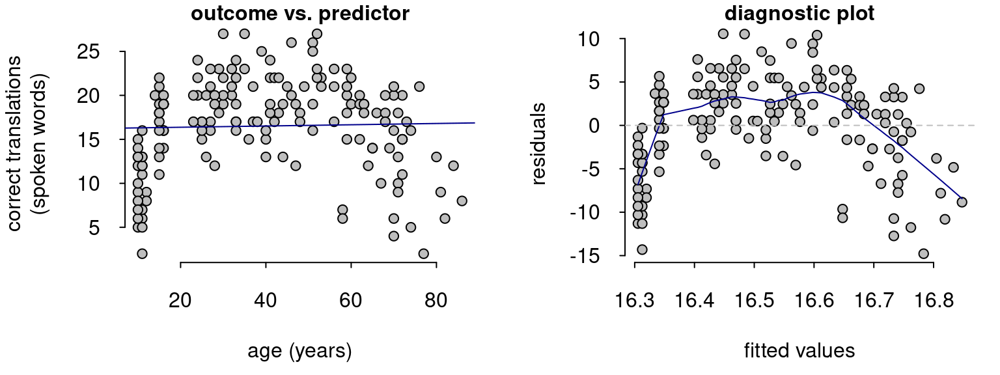
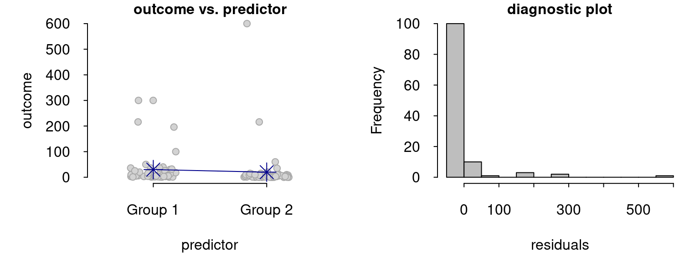
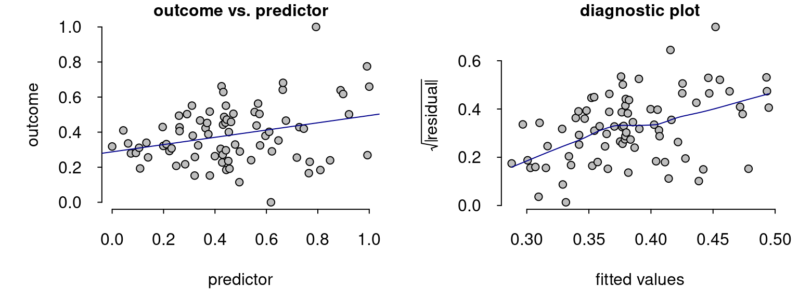
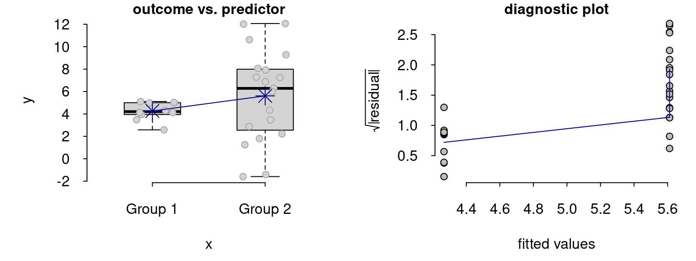

Before worrying about model assumptions, think about model relevance
simplicity
graphics
non-linearities
assumptions
Beginning analysts tend to be overly anxious about the assumptions of their statistical models. This observation is the point of departure of my tutorial Checking the assumptions of your statistical model without getting paranoid, but it’s probably too general. It’d be more accurate to say that beginning analysts who e-mail me about possible assumption violations and who read tutorials on statistics are overly anxious about model assumptions. (Of course, there are beginning as well as seasoned researchers who are hardly ever worry about model assumptions, but they’re unlikely to read papers and blog posts about model assumptions.)
Some anxiety about assumptions is desired if it results in more careful analyses. But if it leads researchers to abandon attempts to model their data, to resort to arcane modelling techniques with little added value, or to reject outright the results of other researchers’ modelling attempts because they didn’t resort to some arcane model, it is counterproductive. I suspect that part of what causes anxiety about assumptions is that these assumptions tend to be interpreted as mathematical requirements that, if violated, vacate any inferential guarantees the model may offer. Here, I will take a different perspective: often, the main problem when some model assumptions are clearly violated is not that the inferences won’t be approximately correct but rather that they may not be as relevant.
The general linear model’s assumptions
The general linear model fitted using ordinary least squares (which includes Student’s t test, ANOVA, and linear regression) makes four assumptions: linearity, homoskedasticity (constant variance), normality, and independence. It’s possible to simulate scenarios in which violations of any of these assumptions utterly invalidate the inferences gleaned from the model. But I suspect that in the vast majority of cases in which violations of the first three assumptions (linearity, homoskedasticity, normality) invalidate inferences, the main problem is that these inferences – even if they were technically correct – wouldn’t be too interesting to begin with. (Violations of the fourth assumption (independence) are less easily identifiable in terms of model relevance but can seriously affect inferences, as I’ll reiterate at the end of this blog post for good measure.)
Figure 1 illustrates the linearity, homoskedasticity and normality assumptions in the context of a linear regression model with one predictor.
First, the general linear model assumes that the relationships between the outcome and any continuous predictors are linear; in Figure 1, the straight regression line adequately captures the trend in the data. (You can add non-linear transformations of the predictors, too, but then the model will assume that the transformed predictors are linearly related to the outcome. I’m using the term ‘linearity assumption’ to mean ‘the model captures the trend in the data’.)
Second, the general linear model assumes that the residuals were all sampled from the same distribution. The three red curves in Figure 1 show the assumed distribution of the residuals at three predictor values; the ‘constant variance’ assumption entails that these distributions all have the same width as they do in Figure 1.
Third, the general linear model assumes that the residuals were all sampled from normal distributions. Strictly speaking, t- and F-statistics – and the p-values derived from them – depend on this assumption.
A useful way of looking at these three assumptions is as follows: According to the model, if you took a large sample of observations with a predictor value of 0.2, you’d find that their outcome values are normally distributed, that the mean outcome value will be about 1.2, and that the standard deviation of the outcome values will be about 0.5. Similarly, according to the model, if you took a large sample of observations with a predictor value of 0.5, you’d also find that their outcome values are normally distributed and have a standard deviation of 0.5, but this time with a mean value of 2.4. And for a large sample of observations with a predictor value of 0.8, you’d again expect to find a normal distribution of outcome values with a standard deviation of 0.5 but with a mean of 3.6. In other words, for each predictor value, the model expects to find a normal distribution of outcomes with the same spread but with a different mean; the location of the mean is captured by the regression line.
Model assumptions are always violated
In real-life examples (as opposed to computer simulations), the linearity, homoskedasticity and normality assumptions are pretty much guaranteed to be violated. Any non-tautological relationship is much more likely to be ever so slightly nonlinear than it is to be perfectly linear, even if floor and ceiling effects aren’t at play: There are just so many more ways in which a relationship can be nonlinear than it can be linear. Similarly, the odds against the distribution of outcome values having a different mean but the exact same standard deviation at different predictor values must be staggering. And finally, normal distributions range from negative to positive infinity and can take any real value, whereas actual data have theoretical or practical minimum and maximum values and don’t have infinite precision (e.g., they’re rounded to the nearest millisecond).
Realistically, then, model assumptions are known to be violated. But the general linear model wouldn’t enjoy such widespread use if even the slightest of assumption violations jeopardised the validity of the inferences gleaned from it. Model assumptions are violated to some degree, and as a rule of thumb, I suggest that the moment you should seriously start to worry about violated assumptions is when you realise that the model you’ve fitted is answering isn’t the most relevant questions that your data suggest.
Assumptions are mostly a matter of model relevance
The most egregious assumption violations aren’t problematic primarily because they may invalidate your inferences; they’re problematic because you’re asking your model to answer a question that’s probably not the most relevant. The examples below illustrate what I mean.
Nonlinearities
Figure 2 shows how well the participants in my Ph.D. study (Vanhove 2014) could guess the meaning of words in an unknown but related language against their age. If you fit a linear model on these data or if you compute a correlation coefficient, you’d obtain a nonsignificant result, even though there’s quite clearly some association between age and performance on the task.

Some may prefer to categorise this nonlinearity under the heading of violated model assumptions. But I think this may be confusing. The problem here isn’t that the model (or the correlation coefficient) doesn’t the answer it was asked correctly; it’s that, having seen this scatterplot, researchers should realise that they’re not asking the question they probably ought to be asking. To elaborate, the linear regression model asks “What’s the form of the linear relationship between the two variables?”, and the correlation coefficient asks “What’s the strength of their linear relationship?”. Both methods provide correct answers to these questions: There isn’t any linear relationship. The error that some researchers make is to leave out the word “linear” and conclude that there isn’t any relationship between the two variables without having looked at the data. This conclusion would be bogus, but that isn’t the model’s fault – let alone the data’s. Having seen this scatterplot or having seen the linear model’s diagnostic plot at the latest, analysts should realise that by fitting a straight line to these data they would gloss over a salient aspect of the relationship, and they should resort to tools that are capable of better capturing the nonlinearity (e.g., generalised additive models).
Non-normal residuals
Strictly speaking, normality is required to compute t-distribution-based confidence intervals and p-values for parameter estimates. However, the larger the sample, the less important this assumption is. This is why Gelman and Hill (2007) list normality as the least important assumption in regression modelling. Unfortunately, such statements are easily misinterpreted as meaning that you can run regression models willy-nilly without regard to the distribution of the data. Again, I think the relevance perspective is useful. An ordinary least-squares model fits mean trends, that is, the regression lines tries to capture the mean of the outcome distribution for any combination of predictor values. But the mean is just a tool to capture a distribution’s central tendency. One nice aspect of normal distribution is that the mean perfectly captures their central tendency and does so more efficiently than other measures of central tendency (e.g., median and mode).
Consider, by contrast, the data in Figure 3 (data from Klein et al., 2014, ‘Gambling study’, University of Florida sample). A linear model ran on these data (corresponding to a Student’s t-test) would characterise the difference in the means between the two groups, and it would do so pretty accurately: When I checked the normality-based inferential results (standard errors and confidence intervals) using a nonparametric bootstrap that does not assume normality, I obtained very similar results. Instead, the main problem is that these means don’t approximately capture the central tendency in the groups – they represent pretty atypical values: the vast majority of outcome values lie below the group means. So again, the linear model would correctly answer a question that, once you’ve seen the data, you should realise isn’t too relevant.

Instead of fitting a linear model to these data (or running a t-test), it would make sense to look into sensible transformations for these data (which is what Klein et al. [2014] did, incidentally), to find a better measure of the data’s central tendencies (e.g., the median), or both. These solutions have their drawbacks (transformed outcome data are more difficult to interpret; the median doesn’t scale up as nicely as the mean does to more complex data), but fitting a straightforward but mostly irrelevant model doesn’t strike me as a solution, either.
There are, of course, situations in which the residuals are distributed non-normally but where the mean trend may actually be of interest. For instance, the outcome variable may have some predetermined lower and/or upper bound so that the residuals don’t extend as far out as a normally distributed variable would, or the outcome variable may be fairy discrete because of rounding. In cases such as these, your inferences about the mean trend would generally be quite correct and relevant. There are, however, two problems you may face in such cases:
If you ask your model to generate a prediction for the mean outcome value for a given combination of predictor values, this mean outcome may lie outside the range of possible outcome values. For instance, if your outcome variable is bounded between 0 and 20, you may still end up with predicted mean values below 0 or above 20 for some combinations of predictor values.
If you ask your model to generate the distribution of the outcome values (not just their mean) for a given combination of predictor values, none of the generated values may actually be possible. For instance, even if your outcome variable is measured to the nearest integer, your model will generate real-valued predictions. More generally, your model will generate normally distributed outcome values even if the analyst knows that the outcome distribution couldn’t possibly be normal.
If you use your model to these ends, then non-normally distributed data may be a cause for concern. But if you don’t, there’s no need to get too anxious just yet.
Non-constant variance
Finally, let’s take a look at the “constant variance” (or “homoskedasticity”) assumption. Violations of this assumption imply that the width of the red curves in Figure 1 varies according to some predictor variable or according to the outcome variable. Figure 4 shows a regression example with simulated data (I don’t have one with real data). The regression line correctly captures the mean trend in the data, and the mean is also a relevant measure of the data’s central tendency. However, since the scatter around the regression line isn’t approximately equal along the predictor variable, the model’s estimated standard errors and confidence intervals may be off, and if asked to generate the distribution of the outcome values for a given predictor value, the model will overestimate the spread of this distribution for low predictor values and underestimate it for high ones.

But rather than immediately starting to worry about incorrect standard errors and how to fix them when looking at a diagnostic plot like in Figure 4, I think analysts’ first reaction typically ought to be “Huh? That’s interesting – why does the spread increase along the predictor variable?” Perhaps the increasing spread is interesting in its own right rather than just a nuisance to be taken care off when estimating the mean trend.
Figure 5 shows another example, this time in the context of a group comparison. There is a pronounced difference between the spreads in Groups 1 and 2, but the mean trend seems to be quite relevant. In fact, incorrect standard errors are not a worry in a two-group comparison because Welch’ t-test (the default t-test in R) takes into account between-group variance differences. However, I still think that researchers’ reaction when seeing plots like these typically ought to be one of wonder (“What could have caused these differences in variance?”) rather of contentment (“Ah well, our standard errors are estimated correctly.”).

But don’t ignore dependencies
Violations of the independence assumption are difficult to diagnose, but even minor violations of this assumption can wreak havoc on your inferential results. So once you’re satisfied that your model is relevant, worry about violations of this assumption first.
Wrapping up
- Worry about the relevance of your model first. Can it answer the question you’re actually interested in?
- If you look at the data’s distribution or at a diagnostic plot and you go “Huh, that’s strange/interesting!”, don’t start to look for a more complicated tool that will yield more accurate inferential results. Instead, think about what may be causing the pattern, and if it is scientifically relevant, look into modelling the pattern in its own right.
- If you look at a diagnostic plot and you’re not quite sure whether an assumption is strongly violated, this is likely because the pattern isn’t salient. And if the pattern isn’t too salient, it’s presumably not too interesting, and its effects on your inferences will probably be fairly minor.
- Don’t ignore dependencies in your data. These are difficult to diagnose if you’re not familiar with the study’s design.
References
Andrew Gelman & Jennifer Hill. 2007. Data analysis using regression and multilevel/hierarchical models. Cambridge, UK: Cambridge University Press.
Klein, Richard A., Kate A. Ratliff, Michelangelo Vianello, Reginald B. Adams Jr., Štěpán Bahník, Michael J. Bernstein, Konrad Bocian et al. 2014. Investigating variation in replicability: A ‘many labs’ replication project. Social Psychology 45(3). 142–152.
Jan Vanhove. 2014. Receptive multilingualism across the lifespan: Cognitive and linguistic factors in cognate guessing. Ph.D. thesis. University of Fribourg.